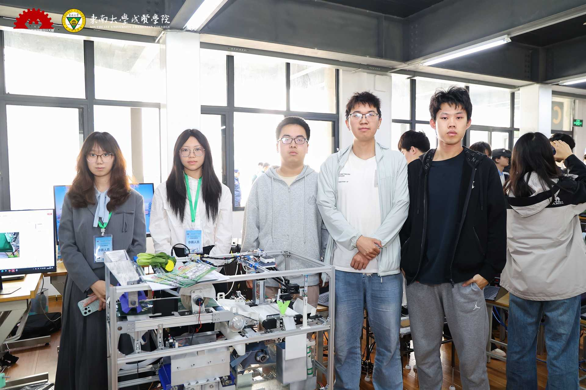
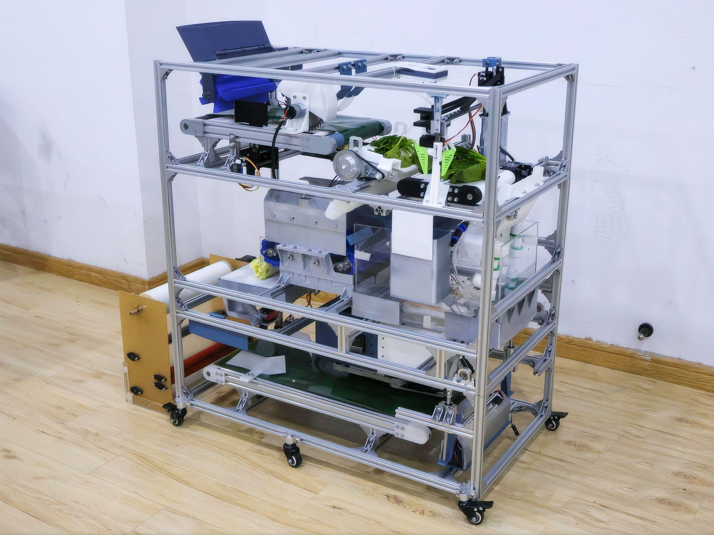
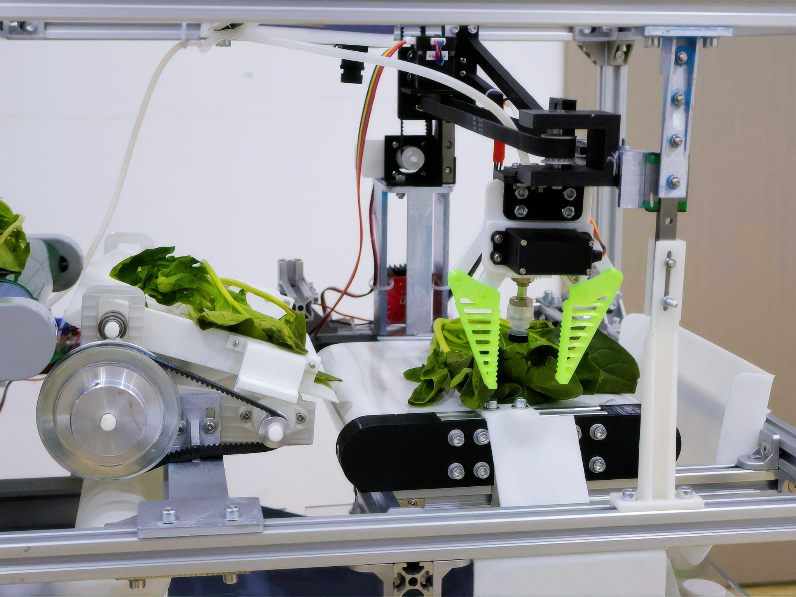
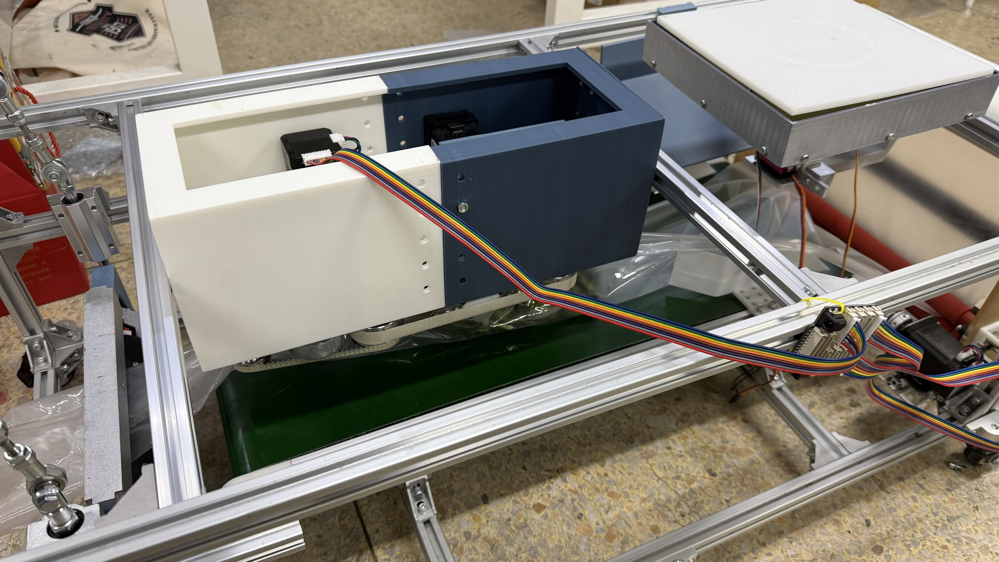

团队成员与项目纪实

比赛现场

设备调试 (一)

针对蔬菜加工环节机械化智能化程度低、人工分选效率低等痛点，本设计研发了一款融合机器视觉与卷积神经网络的一体化蔬菜净选加工柔性装备。该装置集成视觉识别、柔性除杂、双态清洗、智能称重包装及双核心控制系统，实现去根矫位、黄叶夹除、多品类自适应清洗、高精度包装及 APP 远程监控等功能。通过样机验证，该装备具备智能低损、高效适配特点，为蔬菜供应链提供了可行的自动化加工解决方案。




@misc{Jiangnan2026VegSystem,
title={基于机器视觉与卷积神经网络的蔬菜净选包装一体化系统},
author={陈茜 and 胡沁萍 and 盖昶沣 and 蒋子豪 and 袁皓},
year={2026},
publisher={School of Mechanical Engineering, Jiangnan University},
note={Mechanical/AI Innovation Contest Project}
}